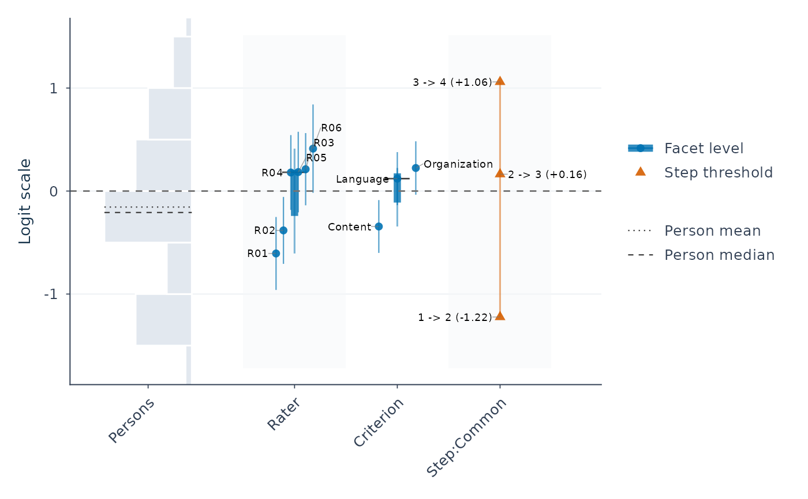

plot_data() is a small accessor for users who want to build custom
base-R, ggplot2, plotly, or table-based displays from mfrmr plot helpers.
It accepts an existing mfrm_plot_data object, or any mfrmr object whose
plot() method supports draw = FALSE. Use plot_data_components() first
when you want to inspect which components are available before extracting
one.
Titles, subtitles, and explanatory footnotes are omitted from figures by
default. Use plot_data(p, "title") for the suggested title and
plot_data(p, "notes") for a Type/Text table of descriptions and cautions.
This works for saved 0.2.x plot payloads and mfrmr-generated ggplots,
including after saveRDS()/readRDS(). Printing an mfrm_plot_data object
also displays its notes in the console. Axes, legends, panel headings and
data/status symbols remain in the figure. Removing figure text does not
remove numerical warnings or strengthen the interpretation of a result.
plot_data_components() is a companion to plot_data(). It returns a
compact table that tells users which plot-data components are available,
what shape they have, and which ones are most useful for custom graphics,
dashboards, or report assembly.
Usage
plot_data(
x,
component = NULL,
type = NULL,
...,
format = c("native", "long"),
value_cols = NULL
)
plot_data_components(x, type = NULL, ...)Arguments
- x
An
mfrm_plot_dataobject, an mfrmr-generated ggplot retaining its plot metadata, or a fitted/report/review object with aplot(..., draw = FALSE)method.- component
Optional single component name inside the reusable plot data. When
NULL, the full plot-data list is returned.- type
Optional plot type passed to
plot()whenxis not already an saved mfrmr plot object.- ...
Additional arguments passed to
plot(..., draw = FALSE)whenxis not already a saved mfrmr plot object.- format
"native"(default) returns the saved component unchanged."long"reshapes a selected table or matrix without dropping missing cells.- value_cols
Explicit table columns to gather into
VariableandValue. Other columns, and an addedSourceRow, remain identifiers/metadata. Select compatible value types and comparable units; estimates, standard errors and interval bounds are distinct quantities, not replicate draws. Matrices instead yield Row, Column, RowLabel, ColumnLabel and Value, with indices retaining identity even if labels repeat. Already-long tables (including cluster-profileobservations) need no reshaping.
Value
The full reusable plot-data list, or the selected component.
A data frame with one row per reusable plot-data component.
Custom distribution plots
A cluster profile's observations component contains one row per original
entity and selected feature, with ID, Feature, Value, Cluster, Included and
MissingReason. Missing values and omitted entities remain. Use Included to
select the plotted population explicitly. table is the summary, not raw
observations. Export either with write.csv; use the observations for custom
box/violin/raincloud plots. Feature units are the original units, supplied by
the study. A smooth density is usually inappropriate for a few ordinal bins.
online networks and reporting guide demonstrates custom plots and CSVs.
Examples
library(mfrmr)
# Saved synthetic MML/RSM analysis of example_operational.
# For your own data, fit a model first; see ?fit_mfrm.
example_fit <- readRDS(system.file("examples", "operational-mml.rds", package = "mfrmr"))
fit <- example_fit$fit
# Draw the Wright map and keep its reusable data
wright <- plot(fit)

plot_data(wright, "notes")
#> Type
#> 1 interpretation
#> 2 description
#> 3 display
#> 4 score_coding
#> 5 orientation
#> 6 orientation
#> 7 orientation
#> 8 step
#> Text
#> 1 Stored fit readiness plus numerical, data-support, connectivity, and stability checks passed. Treat this display as diagnostic evidence, not automatic publication approval.
#> 2 Shared logit scale for persons, facets, and thresholds
#> 3 Persons: N=48; mean=-0.16; median=-0.21.
#> 4 Score meaning is supplied by the rubric: higher coded scores need not mean better performance. Reversing category labels alone does not reverse the fitted scale.
#> 5 Higher Person locations increase expected coded scores in these positive-discrimination models, holding other effects fixed.
#> 6 Rater: higher locations reduce expected coded scores, holding other effects fixed.
#> 7 Criterion: higher locations reduce expected coded scores, holding other effects fixed.
#> 8 A Step describes the transition between adjacent score categories, not a learning stage or a pass/fail cut. At the corresponding predictor value, the two categories have equal probability, not necessarily probability 0.5 each. Stored step offsets and full ability-axis crossings differ when other facet effects or interactions are included; check the reference profile and step owner.
# Extract the plotted locations as a table
locations <- plot_data(wright, component = "locations")
head(locations)
#> # A tibble: 6 × 39
#> Group Label PlotType Estimate SE Fixed CI_Level SE_Method PrecisionTier
#> <fct> <chr> <chr> <dbl> <dbl> <lgl> <dbl> <chr> <chr>
#> 1 Rater R01 Facet level -0.606 0.181 FALSE 0.95 Observati… exploratory
#> 2 Rater R02 Facet level -0.382 0.166 FALSE 0.95 Observati… exploratory
#> 3 Rater R04 Facet level 0.180 0.185 FALSE 0.95 Observati… exploratory
#> 4 Rater R05 Facet level 0.184 0.199 FALSE 0.95 Observati… exploratory
#> 5 Rater R03 Facet level 0.212 0.179 FALSE 0.95 Observati… exploratory
#> 6 Rater R06 Facet level 0.412 0.219 FALSE 0.95 Observati… exploratory
#> # ℹ 30 more variables: SupportsFormalInference <lgl>, SEUse <chr>,
#> # CIBasis <chr>, CIUse <chr>, CIEligible <lgl>, CILabel <chr>,
#> # Measure_Source <chr>, CI_Lower <dbl>, CI_Upper <dbl>, Step <chr>,
#> # StepIndex <int>, BoundarySeparated <lgl>, Highlighted <lgl>, XBase <dbl>,
#> # X <dbl>, OriginalEstimate <dbl>, BelowRange <lgl>, AboveRange <lgl>,
#> # DisplayEstimate <dbl>, DisplayLabel <chr>, OriginalCI_Lower <dbl>,
#> # OriginalCI_Upper <dbl>, DisplayCI_Lower <dbl>, DisplayCI_Upper <dbl>, …
# For table extraction alone, no graphics device is needed
locations_only <- plot_data(fit, component = "locations")
head(locations_only)
#> # A tibble: 6 × 39
#> Group Label PlotType Estimate SE Fixed CI_Level SE_Method PrecisionTier
#> <fct> <chr> <chr> <dbl> <dbl> <lgl> <dbl> <chr> <chr>
#> 1 Rater R01 Facet level -0.606 0.181 FALSE 0.95 Observati… exploratory
#> 2 Rater R02 Facet level -0.382 0.166 FALSE 0.95 Observati… exploratory
#> 3 Rater R04 Facet level 0.180 0.185 FALSE 0.95 Observati… exploratory
#> 4 Rater R05 Facet level 0.184 0.199 FALSE 0.95 Observati… exploratory
#> 5 Rater R03 Facet level 0.212 0.179 FALSE 0.95 Observati… exploratory
#> 6 Rater R06 Facet level 0.412 0.219 FALSE 0.95 Observati… exploratory
#> # ℹ 30 more variables: SupportsFormalInference <lgl>, SEUse <chr>,
#> # CIBasis <chr>, CIUse <chr>, CIEligible <lgl>, CILabel <chr>,
#> # Measure_Source <chr>, CI_Lower <dbl>, CI_Upper <dbl>, Step <chr>,
#> # StepIndex <int>, BoundarySeparated <lgl>, Highlighted <lgl>, XBase <dbl>,
#> # X <dbl>, OriginalEstimate <dbl>, BelowRange <lgl>, AboveRange <lgl>,
#> # DisplayEstimate <dbl>, DisplayLabel <chr>, OriginalCI_Lower <dbl>,
#> # OriginalCI_Upper <dbl>, DisplayCI_Lower <dbl>, DisplayCI_Upper <dbl>, …
library(mfrmr)
# Saved synthetic MML/RSM analysis of example_operational.
# For your own data, fit a model first; see ?fit_mfrm.
example_fit <- readRDS(system.file("examples", "operational-mml.rds", package = "mfrmr"))
fit <- example_fit$fit
# Discover which tables the default Wright map provides without drawing it
plot_data_components(fit)
#> PlotName Component Role ObjectType Rows
#> 1 wright_map wright_style style character NA
#> 2 wright_map renderer scalar_or_vector character NA
#> 3 wright_map visual_contract scalar_or_vector character NA
#> 4 wright_map person table_data data.frame 48
#> 5 wright_map person_exclusions table_data data.frame 0
#> 6 wright_map person_hist metadata list:histogram NA
#> 7 wright_map person_stats table_data data.frame 1
#> 8 wright_map locations table_data data.frame 12
#> 9 wright_map label_points table_data data.frame 12
#> 10 wright_map group_summary summary_or_guidance data.frame 3
#> 11 wright_map group_levels settings character NA
#> 12 wright_map y_range settings double NA
#> 13 wright_map display_settings settings data.frame 1
#> 14 wright_map label_limit scalar_or_vector integer NA
#> 15 wright_map highlight scalar_or_vector NULL NA
#> 16 wright_map retention table_data data.frame 3
#> 17 wright_map retention_note summary_or_guidance character NA
#> 18 wright_map title scalar_or_vector character NA
#> 19 wright_map subtitle scalar_or_vector character NA
#> 20 wright_map show_ci scalar_or_vector logical NA
#> 21 wright_map uncertainty_display scalar_or_vector character NA
#> 22 wright_map group scalar_or_vector NULL NA
#> 23 wright_map group_density scalar_or_vector NULL NA
#> 24 wright_map preset settings character NA
#> 25 wright_map legend style data.frame 5
#> 26 wright_map reference_lines annotation data.frame 1
#> 27 wright_map scale_contract table_data data.frame 1
#> 28 wright_map plot_name scalar_or_vector character NA
#> 29 wright_map notes summary_or_guidance data.frame 8
#> 30 wright_map fit_readiness fit_review data.frame 6
#> 31 wright_map interpretation_status summary_or_guidance character NA
#> 32 wright_map interpretation_note summary_or_guidance character NA
#> 33 wright_map display metadata list:list NA
#> Columns Length IsTabular Accessor
#> 1 NA 1 FALSE plot_data(x, component = "wright_style")
#> 2 NA 1 FALSE plot_data(x, component = "renderer")
#> 3 NA 1 FALSE plot_data(x, component = "visual_contract")
#> 4 22 22 TRUE plot_data(x, component = "person")
#> 5 22 22 TRUE plot_data(x, component = "person_exclusions")
#> 6 6 6 FALSE plot_data(x, component = "person_hist")
#> 7 7 7 TRUE plot_data(x, component = "person_stats")
#> 8 39 39 TRUE plot_data(x, component = "locations")
#> 9 45 45 TRUE plot_data(x, component = "label_points")
#> 10 16 16 TRUE plot_data(x, component = "group_summary")
#> 11 NA 3 FALSE plot_data(x, component = "group_levels")
#> 12 NA 2 FALSE plot_data(x, component = "y_range")
#> 13 8 8 TRUE plot_data(x, component = "display_settings")
#> 14 NA 1 FALSE plot_data(x, component = "label_limit")
#> 15 NA 0 FALSE plot_data(x, component = "highlight")
#> 16 6 6 TRUE plot_data(x, component = "retention")
#> 17 NA 1 FALSE plot_data(x, component = "retention_note")
#> 18 NA 1 FALSE plot_data(x, component = "title")
#> 19 NA 1 FALSE plot_data(x, component = "subtitle")
#> 20 NA 1 FALSE plot_data(x, component = "show_ci")
#> 21 NA 1 FALSE plot_data(x, component = "uncertainty_display")
#> 22 NA 0 FALSE plot_data(x, component = "group")
#> 23 NA 0 FALSE plot_data(x, component = "group_density")
#> 24 NA 1 FALSE plot_data(x, component = "preset")
#> 25 4 4 TRUE plot_data(x, component = "legend")
#> 26 5 5 TRUE plot_data(x, component = "reference_lines")
#> 27 15 15 TRUE plot_data(x, component = "scale_contract")
#> 28 NA 1 FALSE plot_data(x, component = "plot_name")
#> 29 2 2 TRUE plot_data(x, component = "notes")
#> 30 2 2 TRUE plot_data(x, component = "fit_readiness")
#> 31 NA 1 FALSE plot_data(x, component = "interpretation_status")
#> 32 NA 1 FALSE plot_data(x, component = "interpretation_note")
#> 33 2 2 FALSE plot_data(x, component = "display")
#> Notes
#> 1
#> 2
#> 3
#> 4
#> 5
#> 6
#> 7
#> 8
#> 9
#> 10 Use for captions, QA checks, or report text.
#> 11
#> 12
#> 13
#> 14
#> 15
#> 16
#> 17 Use for captions, QA checks, or report text.
#> 18
#> 19
#> 20
#> 21
#> 22
#> 23
#> 24
#> 25 Use to reproduce color, line-type, or legend mappings.
#> 26 Use with primary data to draw thresholds, labels, and reference lines.
#> 27
#> 28
#> 29 Use for captions, QA checks, or report text.
#> 30
#> 31 Use for captions, QA checks, or report text.
#> 32 Use for captions, QA checks, or report text.
#> 33
#> ColumnNames
#> 1
#> 2
#> 3
#> 4 Person, Estimate, SD, PosteriorSD, SE, Extreme, PrimaryEstimate, OptimizerEstimate, DisplayEstimate, DisplayAdjustment, ParameterStatus, BoundaryDirection, ResponseExtreme, ResponseRows, WeightedResponseTotal, PrimaryEstimateBasis, OptimizerEstimateUse, ReasonCodes, ReadinessContractVersion, SourceFitReadiness, SourceInferenceReady, EstimateUse
#> 5 Person, Estimate, SD, PosteriorSD, SE, Extreme, PrimaryEstimate, OptimizerEstimate, DisplayEstimate, DisplayAdjustment, ParameterStatus, BoundaryDirection, ResponseExtreme, ResponseRows, WeightedResponseTotal, PrimaryEstimateBasis, OptimizerEstimateUse, ReasonCodes, ReadinessContractVersion, SourceFitReadiness, SourceInferenceReady, EstimateUse
#> 6 breaks, counts, density, mids, xname, equidist
#> 7 N, ReviewExcludedN, FiniteN, BoundaryExcludedN, Mean, Median, SD
#> 8 Group, Label, PlotType, Estimate, SE, Fixed, CI_Level, SE_Method, PrecisionTier, SupportsFormalInference, SEUse, CIBasis, CIUse, CIEligible, CILabel, Measure_Source, CI_Lower, CI_Upper, Step, StepIndex, BoundarySeparated, Highlighted, XBase, X, OriginalEstimate, BelowRange, AboveRange, DisplayEstimate, DisplayLabel, OriginalCI_Lower, OriginalCI_Upper, DisplayCI_Lower, DisplayCI_Upper, CIClippedLower, CIClippedUpper, CIClipped, BoundaryEnd, CISuppressed, CIDisplayStatus
#> 9 Group, Label, PlotType, Estimate, SE, Fixed, CI_Level, SE_Method, PrecisionTier, SupportsFormalInference, SEUse, CIBasis, CIUse, CIEligible, CILabel, Measure_Source, CI_Lower, CI_Upper, Step, StepIndex, BoundarySeparated, Highlighted, XBase, X, OriginalEstimate, BelowRange, AboveRange, DisplayEstimate, DisplayLabel, OriginalCI_Lower, OriginalCI_Upper, DisplayCI_Lower, DisplayCI_Upper, CIClippedLower, CIClippedUpper, CIClipped, BoundaryEnd, CISuppressed, CIDisplayStatus, LabelY, LabelSide, LabelX, LabelHjust, LabelText, LabelDisplaced
#> 10 Group, PlotType, Min, Q1, Median, Q3, Max, DisplayMin, DisplayQ1, DisplayMedian, DisplayQ3, DisplayMax, N, XBase, TargetGap, DisplayTargetGap
#> 11
#> 12
#> 13 Renderer, LowerLogit, UpperLogit, AutoRangePolicy, BoundaryLevelsAtEnds, CIClippedCount, BoundaryCIEndpointCount, CIDisplayPolicy
#> 14
#> 15
#> 16 Component, Shown, Total, Omitted, RequestedTopN, Complete
#> 17
#> 18
#> 19
#> 20
#> 21
#> 22
#> 23
#> 24
#> 25 label, role, aesthetic, value
#> 26 axis, value, label, linetype, role
#> 27 Model, Method, CoordinateBasis, PopulationSD, SlopeBasis, GpcmModelFamily, GpcmSlopeAction, GpcmSlopeComposition, GpcmLatentDimensionCount, GpcmMmlIdentification, GpcmEstimatorFamily, GpcmStatisticalPenalty, GpcmFiniteParameterBox, GpcmExtremePersonPolicy, FixedLatentSDSlopeField
#> 28
#> 29 Type, Text
#> 30 Domain, Status
#> 31
#> 32
#> 33 show_title, show_notes
# Extract one of the listed components
locations <- plot_data(fit, component = "locations")
head(locations)
#> # A tibble: 6 × 39
#> Group Label PlotType Estimate SE Fixed CI_Level SE_Method PrecisionTier
#> <fct> <chr> <chr> <dbl> <dbl> <lgl> <dbl> <chr> <chr>
#> 1 Rater R01 Facet level -0.606 0.181 FALSE 0.95 Observati… exploratory
#> 2 Rater R02 Facet level -0.382 0.166 FALSE 0.95 Observati… exploratory
#> 3 Rater R04 Facet level 0.180 0.185 FALSE 0.95 Observati… exploratory
#> 4 Rater R05 Facet level 0.184 0.199 FALSE 0.95 Observati… exploratory
#> 5 Rater R03 Facet level 0.212 0.179 FALSE 0.95 Observati… exploratory
#> 6 Rater R06 Facet level 0.412 0.219 FALSE 0.95 Observati… exploratory
#> # ℹ 30 more variables: SupportsFormalInference <lgl>, SEUse <chr>,
#> # CIBasis <chr>, CIUse <chr>, CIEligible <lgl>, CILabel <chr>,
#> # Measure_Source <chr>, CI_Lower <dbl>, CI_Upper <dbl>, Step <chr>,
#> # StepIndex <int>, BoundarySeparated <lgl>, Highlighted <lgl>, XBase <dbl>,
#> # X <dbl>, OriginalEstimate <dbl>, BelowRange <lgl>, AboveRange <lgl>,
#> # DisplayEstimate <dbl>, DisplayLabel <chr>, OriginalCI_Lower <dbl>,
#> # OriginalCI_Upper <dbl>, DisplayCI_Lower <dbl>, DisplayCI_Upper <dbl>, …
# A different plot type has different reusable tables
plot_data_components(fit, type = "ccc")
#> PlotName Component Role
#> 1 category_characteristic_curves probabilities curve_data
#> 2 category_characteristic_curves curve_basis curve_data
#> 3 category_characteristic_curves title scalar_or_vector
#> 4 category_characteristic_curves subtitle scalar_or_vector
#> 5 category_characteristic_curves preset settings
#> 6 category_characteristic_curves legend style
#> 7 category_characteristic_curves reference_lines annotation
#> 8 category_characteristic_curves scale_contract table_data
#> 9 category_characteristic_curves plot_name scalar_or_vector
#> 10 category_characteristic_curves notes summary_or_guidance
#> 11 category_characteristic_curves fit_readiness fit_review
#> 12 category_characteristic_curves interpretation_status summary_or_guidance
#> 13 category_characteristic_curves interpretation_note summary_or_guidance
#> 14 category_characteristic_curves display metadata
#> ObjectType Rows Columns Length IsTabular
#> 1 data.frame 964 13 13 TRUE
#> 2 data.frame 1 3 3 TRUE
#> 3 character NA NA 1 FALSE
#> 4 character NA NA 1 FALSE
#> 5 character NA NA 1 FALSE
#> 6 data.frame 4 4 4 TRUE
#> 7 data.frame 1 5 5 TRUE
#> 8 data.frame 1 15 15 TRUE
#> 9 character NA NA 1 FALSE
#> 10 data.frame 8 2 2 TRUE
#> 11 data.frame 6 2 2 TRUE
#> 12 character NA NA 1 FALSE
#> 13 character NA NA 1 FALSE
#> 14 list:list NA 2 2 FALSE
#> Accessor
#> 1 plot_data(x, component = "probabilities")
#> 2 plot_data(x, component = "curve_basis")
#> 3 plot_data(x, component = "title")
#> 4 plot_data(x, component = "subtitle")
#> 5 plot_data(x, component = "preset")
#> 6 plot_data(x, component = "legend")
#> 7 plot_data(x, component = "reference_lines")
#> 8 plot_data(x, component = "scale_contract")
#> 9 plot_data(x, component = "plot_name")
#> 10 plot_data(x, component = "notes")
#> 11 plot_data(x, component = "fit_readiness")
#> 12 plot_data(x, component = "interpretation_status")
#> 13 plot_data(x, component = "interpretation_note")
#> 14 plot_data(x, component = "display")
#> Notes
#> 1
#> 2
#> 3
#> 4
#> 5
#> 6 Use to reproduce color, line-type, or legend mappings.
#> 7 Use with primary data to draw thresholds, labels, and reference lines.
#> 8
#> 9
#> 10 Use for captions, QA checks, or report text.
#> 11
#> 12 Use for captions, QA checks, or report text.
#> 13 Use for captions, QA checks, or report text.
#> 14
#> ColumnNames
#> 1 Theta, Probability, ExpectedScore, ScoreVariance, Information, CategoryInformation, CategoryInformationShare, Slope, Model, Category, CurveGroup, CurveBasis, PredictorOffset
#> 2 CurveBasis, PredictorOffset, Description
#> 3
#> 4
#> 5
#> 6 label, role, aesthetic, value
#> 7 axis, value, label, linetype, role
#> 8 Model, Method, CoordinateBasis, PopulationSD, SlopeBasis, GpcmModelFamily, GpcmSlopeAction, GpcmSlopeComposition, GpcmLatentDimensionCount, GpcmMmlIdentification, GpcmEstimatorFamily, GpcmStatisticalPenalty, GpcmFiniteParameterBox, GpcmExtremePersonPolicy, FixedLatentSDSlopeField
#> 9
#> 10 Type, Text
#> 11 Domain, Status
#> 12
#> 13
#> 14 show_title, show_notes